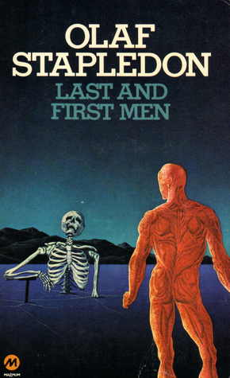
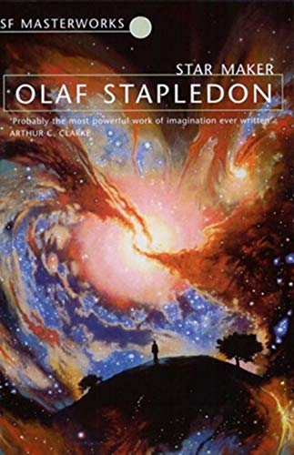

Se o melhor jeito de prever o futuro é inventá-lo, Olaf Stapledon foi um dos maiores inventores da literatura.
Em 1930, Stapledon publicou “Last and First men”, um livro de “história do futuro” que conta a trajetória da humanidade desde a primeira guerra mundial até sua extinção em Netuno, 2 bilhões de anos no futuro, após uma supernova destruir o sistema Solar. Stapledon descreve em detalhes cada uma das 18 espécies pós-humanas: como elas mudaram de aparência física e perderam a inteligência; como, milhões de anos depois, redescobriram a ciência, modificaram a si mesmos com engenharia genética, chegando até a criar uma nova espécie artificial. Porém não é sobre esse livro que falarei hoje.

Em 1937 Stapledon publica “Star maker”, cujo enredo muito mais ambiciosa faz “Last and first men” parecer um minúsculo continho: narrar a história inteira do Universo e dos seres vivos. O livro começa de maneira inusitada quando um homem casado vai dar um passeio à noite perto de sua casa pensando sobre o amor, o casamento, a união das almas, o sentido da vida, quando de repente vira um ser incorpóreo e começa a boiar no espaço, vendo a Terra se afastando rapidamente.
But now irrationally I was seized with a strange worship, not, surely of the star, that mere furnace which mere distance falsely sanctified, but of something other, which the dire contrast of the star and us signified to the heart. Yet what, what could thus be signified? Intellect, peering beyond the star, discovered no Star Maker, but only darkness; no Love, no Power even, but only Nothing. And yet the heart praised.
Após um tempo indeterminado (dias? anos? milênios?) vivendo a sós com seus pensamentos, pensando que estava morto e preso numa espécie de limbo, o protagonista descobre como “voar” pelo espaço com a força do pensamento.
The sun was now but one among the other bright stars. Nothing changed. Was I doomed to hang thus for ever out in space, a bodiless view-point? Had I died? Was this my punishment for a singularly ineffectual life? Was this the penalty of an inveterate will to remain detached from human affairs and passions and prejudices?

Crendo-se um “enviado das estrelas” e sem chance de encontrar a Terra no meio de bilhões de estrelas, ele resolve investigar um a um dos planetas que encontra.
I now hurried from star to star, a lost dog looking for its master. I rushed hither and thither, intent on finding a sun with planets, and among those planets my home.
Percebe então que as estrelas ficaram mais claras e brilhantes, e conclui que na verdade voltou alguns bilhões de anos no tempo. Após mais alguns milênios à deriva, descobre finalmente um planeta habitado por uma espécie inteligente.
Stapledon descreve em detalhes como essa espécie se comunicava com cheiros, o sistema político, as guerras, as desigualdades sociais, etc. Por fim, o protagonista consegue conversar com um “filósofo” desse planeta, e ambos acabam se fundindo numa massa incorpórea e saem explorando o resto do Universo.
O protagonista segue encontrando milhares de espécies: algumas se destruíram em guerras inúteis, outras se perderam por fenômenos naturais (supernovas, meteoros, fim da atmosfera). Suas formas são as mais variadas: simbioses entre pseudo-caranguejos e pseudo-golfinhos, “homens”-árvores, enxames de “abelhas” pensantes, hominídeos pequenos, caracois que nadavam por aí feito barcos, etc. Algumas conseguiram atingir um nível avançado através da inteligência e consciência coletiva feita por telepatia. Assim, os planetas se tornavam “um único ser consciente”, e essa consciência se espalhava para outros sistemas conforme a espécie avançava na exploração espacial.
There was a moment, late in this early phase of our pilgrimage, when, thinking and feeling in unison, we said to one another, “If the Star Maker is Love, we know that this must be right. But if he is not, if he is some other, some inhuman spirit, this must be right. And if he is nothing, if the stars and all else are not his creatures but self-subsistent, and if the adored spirit is but an exquisite creature of our minds, then this must be right, this and no other possibility. For we cannot know whether the highest place for love is on the throne or on the cross. We cannot know what spirit rules, for on the throne sits darkness. We know, we have seen, that in the waste of stars love is indeed crucified; and rightly, for its own proving, and for the throne’s glory. Love and all that is humane we cherish in our hearts. Yet also we salute the throne and the darkness upon the throne. Whether it be Love or not Love, our hearts praise it, out-soaring reason.”

O livro acompanha o protagonista em sua jornada por fundir-se a mais inteligências, a ascenção e queda de espécies, a tentativa de Utopia galática, a descoberta de que até as nebulosas são seres “vivos”.
No clímax do livro, por uma fração minúscula de segundo, ele aparece: o criador de estrelas. O protagonista enxerga um clarão consumir o Universo inteiro, como se de repente todos os átomos do universo explodissem em luzes.
It seemed to me that the Star, my Maker, must surely stoop to meet me and raise me and enfold me in his radiance. For it seemed to me that I, the spirit of so many worlds, the flower of so many ages, was the Church Cosmical, fit at last to be the bride of God. But instead I was blinded and seared and struck down by terrible light.
I saw that the virtue of the creature was to love and to worship, but the virtue of the creator was to create, and to be the infinite, the unrealizable and incomprehensible goal of worshipping creatures.
Ele enxerga como num filme rápido a morte térmica do Universo, quando o último ser vivo escondido no interior frio de um planeta se apaga pra sempre; enxerga o próprio fim de sua existência boiante num universo escuro, arrastado por um sono eterno.
Ele enxerga também o Universo como se fosse visto de fora, do ponto de vista do criador, do Starmaker. Percebe que existem milhares de universos, e que eles são como brinquedos nas mãos de um ser infinitamente poderoso. O criador-de-estrelas cria universos para explorar seus próprios poderes: o primeiro universo só possuía uma dimensão, e seus seres eram como ondas sonoras; depois disso, existiu um universo bidimensional; depois, o nosso universo usual com tempo e espaço; depois, um universo com várias dimensões espaciais e 2 dimensões temporais; e assim o criador experimentava com a Matéria até obter um universo tão complexo e perfeito que o faria dar-se por satisfeito. O Criador era como uma criança que descobria a si mesma através de suas obras.
Eternally, so my dream declared to me, the Star Maker is perfect and absolute; yet in the beginning of the time proper to his creative mode he was an infant deity, restless, eager, mighty, but without clear will. He was equipped with all creative power. He could make universes with all kinds of physical and mental attributes. He was limited only by logic. Thus he could ordain the most surprising natural laws, but he could not, for instance, make twice two equal five. In his early phase he was limited also by his immaturity. He was still in the trance of infancy. Though the unconscious source of his consciously exploring and creating mentality was none other than his own eternal essence, consciously he was at first but the vague blind hunger of creativity.
Em alguns dos universos, o criador intervia dividindo-se em 2: um espírito de destruição e o outro de salvação. Em outros, ele alterava as leis da física quando lhe aprouvia. Na maioria dos universos, porém, ele apenas assistia impassível, além do bem e do mal.
When he had given the last touches to all the cosmical ages from the supreme moment back to the initial explosion and on to the final death, the Star Maker contemplated his work. And he saw that it was good.
Após ser inundado pelas sensações do último e perfeito universo feito pelo criador, o protagonista percebe que não consegue mais compreender as coisas; o entendimento lhe abandona, e depois de alguns instantes ele acorda na Terra, no morro onde havia ido passear.
Sem entender porra nenhuma.